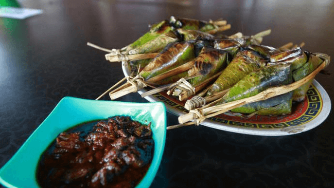
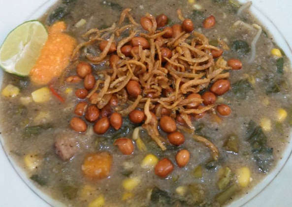
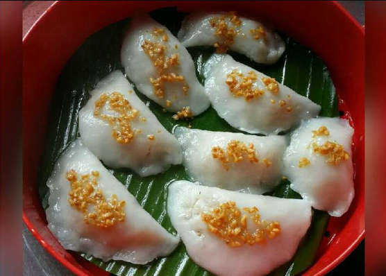
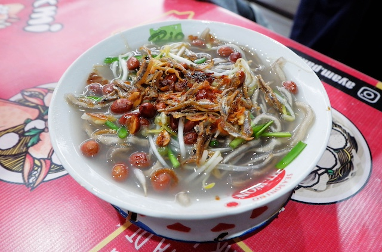
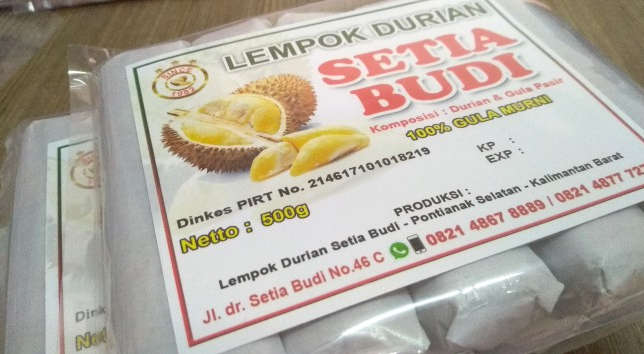
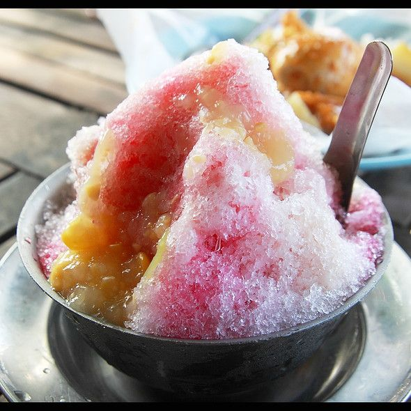

some favorite dishes from pontianak
Pontianak offers a wide variety of some of the best flavors in its food and beverages, allowing us to experience all the tastes that can be sensed by our taste buds. This diversity and uniqueness are what always remind me of home when I taste them.
- Pengkang
- Bubur Pedas
- Chai Kue
- Mi Sagu
- Kue Bingke
- Lempok Durian
- Es Lidah Buaya
- Es Shanghai

Pengkang, a traditional snack, is made using glutinous rice, known as pulut in West Kalimantan. Its appearance is reminiscent of lemper but with a unique twist—Pengkang is stuffed with dried shrimp, also called ebi. These treats are wrapped in distinctive triangular-shaped banana leaves secured with bamboo fasteners. The resulting flavor is a delightful blend of savory and sweet, thanks to the ebi filling, while the steaming process infuses it with a distinct aroma.

Bubur Pedas is a beloved Pontianak dish, a spicy porridge made from rice, spices like chili, garlic, and shallots, and often featuring seafood like shrimp and fish. It's renowned for its rich, spicy, and aromatic flavors, making it a popular comfort food choice in Pontianak, offering a unique and satisfying culinary experience for those who appreciate the bold and spicy tastes of Indonesian cuisine.

Chai Kue, a popular snack hailing from Pontianak, is a delightful treat with a unique twist. These snacks are essentially dumplings made from a translucent, slightly chewy rice flour skin that encases a delicious filling, typically a mixture of ground dried shrimp, bamboo shoots, and various seasonings. Chai Kue is steamed to perfection, resulting in a tender and slightly translucent outer layer, showcasing the colorful and flavorful interior. These bite-sized delights are often served with a sweet and savory chili sauce, creating a harmonious blend of textures and tastes that make them a beloved snack in Pontianak's culinary scene.

Mi Sagu is a specialty dish originating from Pontianak, Indonesia. This unique dish features translucent, jelly-like noodles made from sago starch, which is derived from the pith of certain palm trees. The noodles are typically served in a savory broth, often with prawns, chicken, or a variety of vegetables, creating a delightful contrast between the chewy noodles and the flavorful soup. Mi Sagu is known for its intriguing texture and the way it absorbs the flavors of the broth, making it a distinct and popular culinary experience in Pontianak's vibrant food scene.
Kue Bingke is a traditional delicacy originating from Pontianak, Indonesia. It's a delectable cake made from a mixture of glutinous rice flour, coconut milk, and palm sugar, giving it a sweet and slightly savory taste. What sets Kue Bingke apart is its unique preparation method: the batter is poured layer by layer onto a specially designed griddle, creating a visually appealing cake with distinct, thin layers. After cooking, the cake has a tender yet slightly chewy texture, and it's often adorned with a fragrant pandan leaf for added aroma. Kue Bingke is a beloved dessert and snack in Pontianak, showcasing the rich flavors and culinary traditions of the region.

Lempok Durian is a delicious treat hailing from Pontianak, Indonesia. It is a sweet and creamy delicacy made from durian fruit, often regarded as the "king of fruits" due to its distinctive flavor and aroma. To prepare Lempok Durian, the ripe durian flesh is blended or mashed into a smooth consistency, mixed with sugar, and then wrapped in banana leaves before being steamed or grilled. This traditional method infuses the dessert with a unique blend of sweet and smoky flavors, making it a beloved and sought-after dessert in Pontianak and a delightful way to savor the tropical richness of durian in a new and delightful form.
Es Lidah Buaya, originating from Pontianak, Indonesia, is a refreshing beverage made from aloe vera, known as "lidah buaya" in Indonesian. To prepare this cooling drink, the gel-like flesh of the aloe vera plant is extracted, blended, and mixed with water, sugar, and often a squeeze of lime or lemon for added zest. The result is a light, slightly tangy, and naturally hydrating beverage, perfect for quenching thirst and offering potential health benefits due to the aloe vera's reputed medicinal properties. Es Lidah Buaya is a popular choice in Pontianak's tropical climate, offering a soothing and revitalizing experience for those seeking a rejuvenating drink.

Es Shanghai in Pontianak is a beloved dessert known for its sweet and refreshing qualities. It consists of shaved ice topped with a variety of colorful and flavorful toppings, including jelly, tapioca pearls, fresh fruits, and sweet syrups. This dessert is a favorite choice for both locals and tourists, especially in hot weather, offering a delightful blend of textures and flavors to beat the heat.